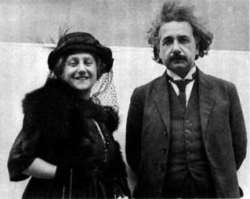

Sau nhiều tháng sống tại Berne, Albert Einstein thấy rằng các công việc tại Phòng Văn Bằng càng ngày càng trở nên dễ dàng hơn, vì vậy ông có đủ thời giờ để tâm tới môn Vật Lý Toán Học.
Tuy Einstein ưa thích lối sống cô đơn nhưng không phải là ông không có cảm tình với các người chung quanh. Tư tưởng cởi mở của ông khiến cho ông có nhiều bạn. Sự vui đùa và cách châm biếm khiến ông luôn luôn vui nhộn và đầy nhựa sống. Nụ cười hiện ra trên môi làm cho mọi người phải chú ý đến ông. Người nào đã sống gần Einstein đều nhận thấy rằng sự cười đùa của ông là một nguồn vui, song đôi khi nó còn là sự chỉ trích. Hình như Einstein có cảm tình với bất cứ ai, nhưng ông lại không thích đi tới sự quá thân mật khiến cho ông thiếu tự do. Phải chăng sự ưa thích sống cô đơn để hy sinh hoàn toàn cho Khoa Học đã làm cho Einstein xa cách các bạn bè trong khi nội tâm của ông lại có tình cảm với tất cả mọi người. Mãi về sau, vào năm 1930, Einstein đã phân tích cái trạng thái tình cảm đó như sau: “vì tôi say mê sự công bằng và nhiệm vụ xã hội nên tôi đã phạm phải một điều tương phản kỳ lạ khá quan trọng là tôi thiếu sự hợp tác trực tiếp với mọi người. Tôi là một con ngựa tự thắng lấy yên cương".
Tại Berne, ngoài thời giờ khảo cứu về Toán và Vật Lý Học, Einstein còn để tâm đến Triết Học. Vài triết gia đã giúp ông học được các nguyên tắc đại cương của phương pháp luận lý. Chính phương pháp này cho phép các nhà bác học diễn tả những điều nhận xét trực tiếp thành các định luật rõ ràng. David Hume, Ernest Mach, Henri Poincaré và Emmanuel Kant thuộc vào hạng các triết gia kể trên. Còn Schopenhauer và Nietzsche khiến Einstein chú ý vì các vị này đã phát biểu các tư tưởng đôi khi không cần thiết, đôi khi tối nghĩa bằng các câu văn đẹp đẽ, gợi lên cho người đọc những cảm xúc, khiến cho người ta phải mơ màng, suy nghĩ, chẳng khác gì một người biết nhạc được thưởng thức vài khúc tiết tấu nhịp nhàng. Tuy nhiên, David Hume (1711-1776, người Anh) vẫn là người được Einstein ưa thích nhất. Nhiều người biết rằng triết gia gốc Anh này là người khởi xướng phương pháp luận lý thực nghiệm và cách trình bày suy luận của ông ta thực là sáng sủa, phân minh.
Suốt trong 5 năm trường, từ 1901 tới 1905, các cố gắng tư tưởng của Einstein đã mang lại kết quả: ông đã nghiên cứu và lập ra định luật liên kết thời gian và không gian. Vào một buổi sáng tháng 6 năm 1905, viên chủ nhiệm tạp chí Annalen der Physik tại Munich tiếp một thanh niên tóc đen không chải, quần áo cũ kỹ. Thanh niên đó đưa viên chủ nhiệm một cuộn giấy 30 trang và yêu cầu đăng trên tạp chí khoa học.
Albert Einstein đã trình bày “Thuyết Tương Đối” của mình trên tờ báo vật lý Annalen der Physik. Ông đã đề cập đến sự tương quan của năng lượng và khối lượng bằng một phương trình lừng danh nhất của Khoa Học: E = MC2. Nói một cách đại cương, phương trình trên có nghĩa là năng lượng của vật chất thì bằng khối lượng nhân với bình phương tốc độ của ánh sáng. Theo lý thuyết này, nếu người ta biết một phương pháp kỹ thuật, thì với một ký than gỗ, hay một ký đá sỏi, hay một ký mỡ heo, người ta có thể rút ra một năng lượng tương đương với 25 ngàn triệu (tỷ) kilowatt-giờ điện lực [1] , nghĩa là số điện lực sản xuất thời bấy giờ của tất cả các nhà máy phát điện tại Hoa Kỳ chạy suốt trong một tháng mà không nghỉ.
Sau khi bài khảo cứu của Albert Einstein được phổ biến tại châu Âu, thì Henri Poincaré ở Pháp, Hendrik Lorentz ở Hòa Lan, Max Planck ở Đức, cùng tất cả các đầu óc khoa học vĩ đại thời bấy giờ đều sửng sốt và đã viết thư hỏi tòa báo: - “Ai đã viết bài báo đó? Có phải là một giáo sư đại học không? ". Tòa báo đã trả lời: - “Một thanh niên Do Thái, quốc tịch Đức, 26 tuổi, giúp việc tại Phòng Văn Bằng tại Berne”.
Bài khảo cứu của Einstein đã làm cho nhiều người thắc mắc, nghi ngờ. Vào thời kỳ đó, ít người đo lường nổi sự quan trọng lớn lao của học thuyết Einstein nhưng dù sao, lý thuyết đó đã cách mạng hóa quan niệm của con người về Vũ Trụ. Henri Poincaré khi đó đã viết về Albert Einstein như sau: “Ông Einstein là một trong các đầu óc khoa học phi thường mà tôi chưa từng thấy. Đứng trước một bài tính vật lý, ông Einstein đã không bằng lòng với các nguyên tắc cổ điển sẵn có, mà còn nghiên cứu tất cả các trường hợp có thể nhận được”.
Thật là kỳ lạ khi công trình khảo cứu có giá trị lớn lao đó lại do một nhân viên xoàng của Phòng Văn Bằng phổ biến. Người ta vội mời ông giảng dạy tại trường Đại Học Zurich. Mọi người đều biết rằng tại các trường Đại Học, trước khi trở thành một giáo sư thực thụ, ai cũng phải trải qua thời kỳ của một giảng sư. Einstein nhận giữ chân này theo lời khuyên của Giáo Sư Kleiner.
Chân Giáo Sư môn Vật Lý Lý Thuyết tại trường Đại Học Zurich bị trống. Vì vấn đề chính trị, hội đồng quản trị đại học mời Friedrich Adler, giảng sư, lên phụ trách, nhưng Adler đã từ chối và nói: - “Nếu có thể có một người như Einstein vào Đại Học của chúng ta thì việc gọi đến tôi thật là vô lý. Tôi thú nhận rằng trình độ hiểu biết của tôi không thấm vào đâu với Einstein. Chúng ta không nên vì vấn đề chính trị mà không mời một người có thể làm cho mức hiểu biết tại bậc đại học được cao hơn". Vì vậy vào năm 1909, Einstein được bổ nhiệm làm “Giáo Sư Đặc Cách” của trường Đại Học Zurich.
Tuy bước lên một địa vị cao hơn trong xã hội, nhưng lúc nào Einstein cũng thản nhiên, bình dị. Cuộc sống mới này tuy khá hơn trước về mặt tài chính, nhưng bà vợ ông vẫn phải chứa trọ các sinh viên để kiếm thêm tiền. Trước tình trạng vật chất còn eo hẹp đó, Einstein đã có lần nói đùa như sau: “Trong Thuyết Tương Đối của tôi, tôi đã đặt rất nhiều đồng hồ tại khắp nơi trong Vũ Trụ nhưng thực ra, tôi thấy không có đủ tiền mua nổi một chiếc để đặt ngay trong phòng của chính mình” . Thời gian sinh sống tại Zurich thật là phẳng lặng, hai ông bà Einstein cùng hồi tưởng thời sinh viên và coi cái tỉnh này như một tổ quốc nhỏ bé, nhưng yêu dấu.
Năm 1910, Đại Học Đường thuộc Đức tại Prague, Tiệp Khắc, thiếu một chân giáo sư vật lý lý thuyết. Đây là trường đại học cổ nhất của miền Trung Âu. Trong hậu bán thế kỷ 19, các giáo sư Tiệp và Đức cùng nhau giảng dạy, nhưng rồi cuộc tranh chấp chính trị đã khiến cho nhà cầm quyền quyết định rằng từ năm 1888, trường đại học này được phân ra làm hai, một đại học Đức, một đại học Tiệp. Sự phân chia đó đã làm cho các giáo sư và sinh viên của hai đại học đường không liên lạc gì với nhau và còn hiềm khích nhau nữa.
Theo nguyên tắc, trường đại học đề nghị các giáo sư vào các ghế trống, còn ông Bộ Trưởng Giáo Dục chỉ định vị được tuyển dụng nhưng thực ra vào thời kỳ đó, quyền chọn lựa thuộc về nhà vật lý học Anton Lampa, một người đã có công trong việc canh tân phương pháp giáo dục. Lúc bấy giờ có 2 người đủ khả năng: Gustave Jaumann, giáo sư thuộc Viện Kỹ Thuật Brno và Albert Einstein là người thứ hai. Theo quy luật, thứ tự các người được chọn lựa phải căn cứ vào công cuộc khảo cứu khoa học của họ, và vì lý thuyết của Einstein được nhiều người biết tới, Einstein được xếp lên trên Jaumann. Nhưng cuối cùng, ông Bộ Trưởng Giáo Dục lại trao chức vụ cho Jaumann, vì ông ta không muốn bổ nhiệm một người ngoại quốc. Jaumann từ chối. Chức vụ về tay Einstein.
Phải rời bỏ Zurich để đến một nơi xa lạ là một điều gia đình Einstein không muốn, ông do dự nhưng cuối cùng nhận lời. Sống tại Prague, Einstein thường gặp gỡ Ernest Mach, Viện Trưởng Đại Học và cũng là một nhân vật nổi danh về một ngành Triết Học. Trong thời gian giảng dạy tại Prague, ngoài việc xây dựng lý thuyết về trọng lực, Einstein còn để tâm tới lý thuyết về Quanta ánh sáng của Max Planck. Thuyết ánh sáng truyền theo làn sóng của Augustin Fresnel và thuyết Điện Từ của James Maxwell đã không thể cắt nghĩa được hiện tượng Quang Điện (photoelectric effect). Einstein liền dùng công cuộc khảo cứu của Planck vào các điều suy đoán của mình.
Vào năm 1911, một hội nghị khoa học nhỏ được tổ chức tại Bruxelles, nước Bỉ. Người đứng ra tổ chức là nhà triệu phú Ernest Solvay. Ông này là một kỹ nghệ gia về Hóa Chất và đã thành công lớn. Tuy giàu có nhưng Solvay vẫn yêu thích Khoa Học và có khảo cứu chút ít về Vật Lý. Solvay muốn được nhiều người chú ý đến công lao của mình.
Trong số các bạn, nhà triệu phú Solvay thường giao du với Walther Nernst, một nhà hóa học danh tiếng. Walter Nernst nghĩ đến ý thích của Solvay và đến ích lợi của Khoa Học, nên đề nghị với nhà triệu phú chịu phí tổn cho một hội nghị gồm các nhà bác học danh tiếng của châu Âu và các vị này sẽ bàn luận về các trở ngại của “Nền Vật Lý Mới” rồi nhân dip này, Solvay có thể trình bày lý thuyết của mình. Ernest Solvay ưng thuận. Hội nghị được tổ chức. Sir Ernest Rutherford đại diện cho Anh Quốc, Henri Poincaré và Paul Langevin thay mặt cho Pháp Quốc, Max Planck và Walther Nernst đại diện cho Đức Quốc, H.A. Lorentz là đại biểu của Hòa Lan, xứ Ba Lan được thay mặt bởi bà Marie Curie khi đó đang làm việc tại Paris, còn Albert Einstein đại diện cho Áo Quốc cùng với Franz Hasenohrl.
Hội nghị Solvay
Hội nghị lấy tên là Solvay và diễn ra trong vòng thân mật. Không ai chỉ trích lý thuyết của ông Solvay cả, tất cả đều tránh vì muốn tỏ lòng biết ơn và lịch sự đối với chủ nhân. Ngoài ra, trong cuộc bàn cãi, mọi người đều kinh ngạc về những ý tưởng mới lạ của Einstein. Sau hội nghị, Solvay nhận rõ chân giá trị của buổi gặp gỡ nên về sau, ông ta thường tổ chức các buổi họp khác mà vai chính là Einstein.
Năm 1912, sau một thời gian sống tại Prague, Einstein lại được giấy mời giữ chân giáo sư môn vật lý lý thuyết tại trường Bách Khoa Zurich. Trường này thuộc quyền của Liên Bang Thụy Sĩ nên rất lớn, và những kỷ niệm của tuổi trưởng thành làm cho Einstein cũng muốn quay về nơi chốn cũ. Hơn nữa, bà Mileva vợ ông, lại cảm thấy khó chịu khi sống tại Prague và mong muốn trở lại Zurich, tổ quốc nhỏ bé của bà. Vì vậy Einstein cùng gia đình rời Prague.
Sự ra đi khỏi thành phố Prague của Einstein làm cho nhiều người xao động. Ai cũng muốn lưu giữ danh tiếng của nhà bác học cho địa phương của mình. Các báo chí cho rằng các bạn của ông đã ngược đãi Einstein và bắt ông xin đổi đi. Có người lại nói vì ông gốc Do Thái, nhà cầm quyền không đối xử tử tế với ông khiến cho Einstein phải từ giã Prague. Đúng ra, các điều kể trên trái với sự thực. Tại Prague, Einstein cảm thấy dễ chịu và người dân nơi này với tính tình cởi mở, đã làm cho ông quý mến họ.
Tới cuối năm 1912, Albert Einstein trở thành Giáo Sư Thực Thụ của trường Bách Khoa Zurich và mang lại danh tiếng cho đại học này. Einstein làm việc không ngừng. Các lý thuyết mới về Toán của các nhà toán học Ý Đại Lợi Ricci và Levi-Civita đã làm cho Einstein chú ý đến. Ông cùng với Marcel Grossmann, một người bạn cũ, khảo cứu các phương pháp toán học mới ngõ hầu có thể dùng cho lý thuyết về Trọng Lực.
Vào năm 1913, một hội nghị các nhà bác học Đức được tổ chức tại Vienna. Người ta mời Einstein tới trình bày lý thuyết về Trọng Lực của ông. Trong buổi thuyết trình này, ai cũng phải sửng sốt về các ý tưởng mới mẻ, quá kỳ dị của Einstein. Mọi người trông chờ ở ông một lý thuyết tổng quát, tân kỳ.
Berlin, thủ đô của nước Đức, dần dần trở nên Trung Tâm Chính Trị và Kinh Tế của châu Âu. Hơn nữa, người Đức còn muốn thành phố này là nơi tập trung Khoa Học và Nghệ Thuật. Riêng về Khoa Học, muốn cho bộ môn này phát triển, cần phải có các viện khảo cứu và nhiều nhà bác học danh tiếng. Tại Hoa Kỳ, ngoài các trường đại học ra, còn có các viện khảo cứu được các nhà tư bản như Rockfeller, Carnegie, Guggenheim trợ giúp. Hoàng Đế Wilhelm II cũng muốn các công chình tương tự được thực hiện tại nước mình. Vì thế các kinh tế gia, kỹ nghệ gia và các thương gia Đức cùng nhau góp công, góp của vào việc thành lập Viện Kaiser Wilhelm Gesellschaft. Được tuyển làm nhân viên của Viện là một danh dự lớn lao, lại được danh hiệu Viện Sĩ, được mặc y phục lộng lẫy và đôi khi được tham dự các buổi yến tiệc với nhà vua.
Người ta đang tìm kiếm các nhà bác học lỗi lạc và sự chọn lựa được căn cứ theo giá trị khoa học của từng người. Vào thời kỳ đó, Max Planck và Walther Nernst là hai nhân vật dẫn đầu về Khoa Học của nước Đức. Hai ông này khuyên vị Giám Đốc Viện Wilhelm, ông Adolphe von Harnack, gửi giấy mời Albert Einstein, một ngôi sao sáng đang lên của nền trời Vật Lý Mới. Einstein cũng được Planck và Nernst khuyên nhủ nên nhận lời để sau này có thể trở nên nhân viên của Hàn Lâm Viện Hoàng Gia Phổ, một danh dự mà các giáo sư Đại Học Đường Berlin đều ao ước. Einstein được mời vào Viện Hoàng Đế Wilhelm thực.
Công việc của Einstein trong Viện sẽ là nghiên cứu theo ý riêng của mình. Ông lại được mời làm Giáo Sư Đại Học Đường Berlin, tại nơi này công việc giảng dạy nhiều hay ít tùy ý. Việc quản trị đại học đường cùng với việc trông coi các kỳ thi, ông sẽ không phải để tâm tới. Einstein được hoàn toàn tự do khảo cứu.

Riêng đối với Einstein, ông cũng phân vân trước việc trở lại Berlin. Cái xã hội đó không hợp với thâm tâm của ông thực, nhưng địa vị cao sang sẽ giúp cho cuộc sống hàng ngày của ông dễ chịu hơn. Nhà bác học bị giằng co giữa hai ý tưởng: quan niệm sống cho Khoa Học, cho bản thân và ý tưởng về một chủ nghĩa xã hội hợp đạo lý. Ngoài ra tại Berlin, Einstein còn có cô em họ, cô Elsa. Ông có gặp cô này vài lần và thấy có cảm tình với nàng. Cuộc ly dị cách đây vài năm với cô Mileva vì bất đồng ý kiến ở vài điểm, đã khiến Einstein nghĩ tới việc lập lại một gia đình mới. Chính điều này cũng góp đôi phần vào quyết định của Einstein trở lại thành phố Berlin. Einstein từ bỏ Zurich vào cuối năm 1913.
Đúng vào năm 34 tuổi, Albert Einstein là nhân viên của Viện Hàn Lâm Berlin và tượng trưng cho một thanh niên sống giữa các đồng viện hầu hết đều cao tuổi hơn, đều là những bậc lão thành trong cuộc sống đại học. Những vị này thường tự cho là quan trọng, trong khi cách cư xử của Einstein lại dễ dàng, bình dị. Tại Berlin, vài vật lý gia thường họp với nhau để bàn luận các vấn đề Khoa Học. Trong các buổi thảo luận đó, ngoài Einstein, Planck và Nernst ra, người ta còn thấy Max Von Laue, Jacques Franck, Gustave Hertz, cô Lise Meitner và sau này có Erwin Schrödinger, người đã có công về Thuyết Lượng Tử (theorie quantique).
Einstein sống tại Berlin chưa được một năm thì Thế Chiến Thứ Nhất bùng nổ. Một số các nhà bác học thấy rằng mình cũng phải góp phần với các chiến sĩ ngoài mặt trận. Họ liền hoạt động trong phạm vi của họ, tức là nghiên cứu và chế tạo các dụng cụ chiến tranh. Walther Nernst chế tạo hơi ngạt, Fritz Haber, người bạn thân của Einstein, nghiên cứu việc điều chế ammoniac bằng cách dùng khí nitrogen rút ra từ không khí.
Trong thời gian sống tại Berlin này, Einstein đã gặp cô Elsa, một người em họ, một người bạn từ thuở nhỏ. Cô này lúc bấy giờ góa chồng và có 2 đứa con riêng, song cô là người tính tình vui vẻ, lại đảm đang. Hai người thành hôn với nhau và sống một cuộc đời tương đối đầy đủ, nhưng hạnh phúc.